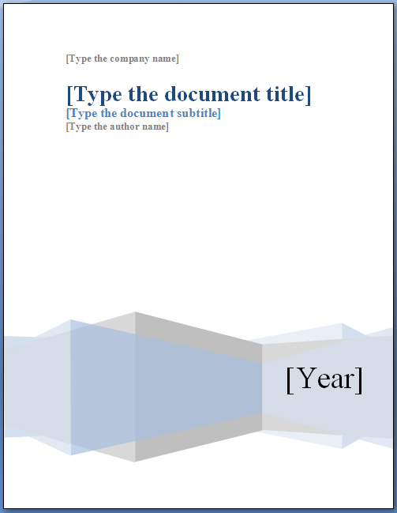
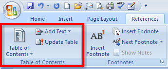
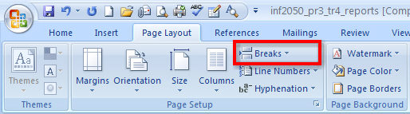
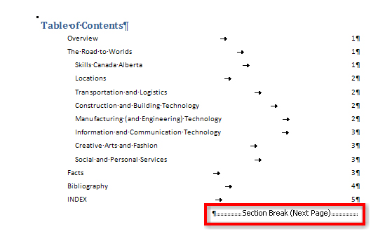
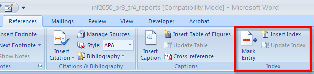
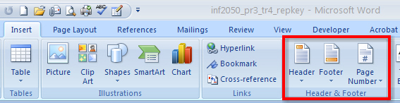
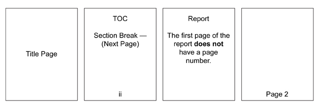

The title page comes at the very beginning of a report and is meant to create interest, generate a first impression of the report, and provide information, such as:
You can use the Insert tab to have Microsoft Word 2007 create a cover page for you. Simply position your cursor at the beginning of your report and click the Cover Page button in the Pages group for a built-in library of preformatted cover pages. You can also design your own cover page using formatted text and graphics.
This is a sample title page available in the built-in library. Just click the placeholders and insert information pertinent to your report.

Microsoft product screen shot(s) reprinted with permission from Microsoft Corporation.
The table of contents, also known as the TOC, comes before the report and provides an overview of the topics included. It helps the reader locate information in the report by listing the headings and their corresponding page numbers. If you created your report using Styles for your headings and subheadings, Microsoft Word can save you time and automatically create a table of contents. You can also use the Add Text command to insert additional items in the TOC. To create a TOC, simply place your cursor at the beginning of the report, insert a new page for the table of contents and click the Table of Contents button to choose from a variety of built-in templates. If you make any changes to your document, you must update your Table of Contents to reflect your most recent changes using the Update Table button.

Microsoft product screen shot(s) reprinted with permission from Microsoft Corporation.
Go to the Instructional Videos and watch “Create and Update a Table of Contents” to see how to create and update a table of contents by using the References tab on the ribbon. Remember, it is important to position your cursor and insert a new page for your table of contents.
In Microsoft Word, you can use section breaks to separate your report into different sections. It is important to separate the front matter (the title page and the TOC) from the report in order to paginate and format the different sections of the report properly. After creating the table of contents, always insert a Next Page Section Break as shown in the diagram below. You can access different types of breaks, including the Next Page Section Break in the Page Layout tab, in the Page Setup group. Notice the Section Break (Next Page) on the Table of Contents when you turn on the Show/Hide (¶) function, which indicates that a new section and a new page has been created. When the report is broken down by sections, you can customize settings, such as page numbering and margins, for each section.

Microsoft product screen shot(s) reprinted with permission from Microsoft Corporation.

Microsoft product screen shot(s) reprinted with permission from Microsoft Corporation.
Another useful tool that you can utilize in creating your report is the Index feature, which is also located in the Reference tab. An index is found at the end of a document and lists terms and topics used in the report, as well as the page that they appear on. To create an index, simply select the desired text and then click the Mark Entry command, which will bring up the Mark Index Entry window. Select Mark or Mark All if the same text is repeated throughout the document. Complete this step for all of the text you would like to include in the index. Insert a new page for the index, and click the Insert Index command. Select a style you like best and then click OK. Remember, if you add additional sources after you insert the index, always update your index by clicking the Update Index button.

Microsoft product screen shot(s) reprinted with permission from Microsoft Corporation.
Go to the Instructional Videos and watch “Creating an Index” to see how easy it is to use the Index group to mark entries and insert an index.
Headers contain information that is repeated at the top of each page in a document; footers contain information that is repeated at the bottom of each page. Headers and footers are important in multi-page reports because they often include information such as page numbering, the report’s submission date, the author’s name, and the report’s title.
You can add headers, footers, and page numbers from the Header and Footer group in the Insert tab on the ribbon.

Microsoft product screen shot(s) reprinted with permission from Microsoft Corporation.
Number the pages of a report following the diagram below. Remember, you used a section break after the TOC, separating the report into sections, allowing you to number each section differently.

Look at the diagram below to see how to remove page numbers from the title page and the first page of the report, and how to change the number format to roman numerals on the table of contents.
Go to the Instructional Videos and watch “Paginating a Report” to learn how to apply, format, and remove page numbers to different sections of the report.
When you have inserted the page numbers properly, you can add additional information to the header or footer, such as the date or the name of the author. Click the Close Header and Footer button when you are finished adding the header and footer information.
The last thing you should do before you print any document is preview it. Click the Office button and select Print. This will bring up the Print Preview tab and allow you to print, adjust the page setup, zoom, and preview the document.
Go to the Instructional Videos and watch “Previewing Document Options” to learn how to preview a document using scroll, zoom, and Print Preview.